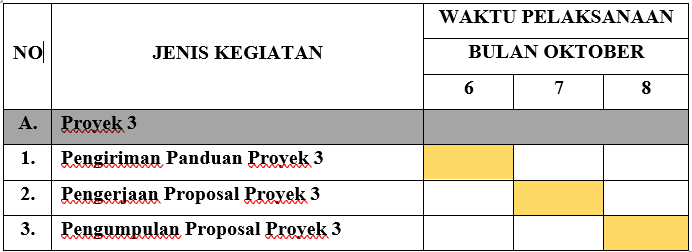

PENGEMBANGAN APLIKASI BIMBINGAN KONSELING DENGAN KONSEP SEVERLESS MICRO
FRONTEND DAN GO PACKAGE
PROPOSAL PROYEK III
Ditujukan sebagai salah satu syarat
Untuk memperoleh nilai pada kegiatan proyek 3
Program Studi DIV Teknik Informatika
Oleh
ARDIVA PUTRI TAVA PRAMESWARI (1214003)
GABRIELLA YOUZANNA RORONG (1214027)
PROGRAM DIPLOMA IV TEKNIK INFORMATIKA
UNIVERSITAS LOGISTIK DAN BISNIS INTERNASIONAL
BANDUNG
2023
ABSTRAK
Proposal ini menggambarkan rencana pengembangan sebuah aplikasi bimbingan konseling yang akan memanfaatkan konsep serverless, mikrofrontend, dan Go Package untuk meningkatkan efisiensi dan efektivitas layanan bimbingan konseling di konteks pendidikan. Aplikasi ini bertujuan untuk memberikan solusi inovatif dalam meningkatkan aksesibilitas, skalabilitas, dan kinerja aplikasi, sekaligus menjadikan pengalaman siswa dan konselor lebih responsif dan terhubung dengan teknologi terkini. Dalam era digital saat ini, bimbingan konseling menjadi semakin penting dalam membantu individu mengatasi tantangan psikologis dan emosional. Aplikasi bimbingan konseling dapat memfasilitasi akses ke profesional kesehatan mental, namun seringkali dihadapkan pada tantangan terkait skalabilitas, keandalan, dan pengembangan yang efisien. Proposal ini mengusulkan pengembangan aplikasi bimbingan konseling yang inovatif menggunakan konsep Serverless Micro Frontend dan Go Package untuk mengatasi masalah-masalah tersebut. Konsep Serverless Micro Frontend akan memungkinkan aplikasi untuk meningkatkan skalabilitasnya dengan cara yang efisien. Dengan mengadopsi arsitektur serverless, aplikasi ini dapat mengelola permintaan pengguna secara dinamis, mengurangi beban infrastruktur, dan meningkatkan keandalan. Micro frontend memungkinkan pengembangan modul-modul yang terisolasi, mempermudah pengembangan dan pemeliharaan aplikasi. Selain itu, penggunaan Go Package sebagai bahasa pemrograman akan memberikan kinerja yang cepat dan efisien. Bahasa Go memiliki kemampuan untuk menangani banyak permintaan secara bersamaan, menghasilkan respons yang cepat, dan mengurangi beban penggunaan sumber daya.
Kata kunci: Bimbingan Konseling, Serverless Micro Frontend, Go Package
PENGEMBANGAN APLIKASI BIMBINGAN KONSELING DENGAN KONSEP SEVERLESS MICRO FRONTEND DAN GO PACKAGE
PENDAHULUAN
1. Deskripsi Aplikasi
Aplikasi "Pengembangan Aplikasi Bimbingan Konseling Dengan Konsep Severless Micro Frontend Dan Go Package" merupakan sebuah platform inovatif yang bertujuan untuk memberikan layanan bimbingan konseling secara efisien dan terdepan. Aplikasi ini menawarkan berbagai fitur yang mencakup pendaftaran siswa dan konselor, manajemen jadwal, serta sesi konseling virtual. Dengan konsep "serverless", aplikasi ini mampu memberikan skalabilitas tinggi dan ketahanan yang baik terhadap beban server. Selain itu, pengguna akan merasakan keuntungan dari mikrofrontend, yang memungkinkan pengembangan dan pemeliharaan modul-modul aplikasi yang terpisah dengan lebih mudah. Go Package digunakan untuk mengoptimalkan kinerja aplikasi dan menjadikannya lebih responsif. Cara kerja aplikasi ini melibatkan penggunaan teknologi serverless untuk menangani permintaan dan interaksi pengguna, sementara mikrofrontend memungkinkan pengembang untuk mengintegrasikan berbagai modul fungsional dengan lancar. Dengan demikian, aplikasi ini memberikan solusi yang efektif dalam membantu penyedia layanan konseling dalam memberikan bantuan kepada siswa secara efektif dan terhubung dengan perkembangan teknologi terbaru.
2. Latar Belakang Masalah
Latar belakang masalah yang melatarbelakangi penelitian ini adalah berkaitan dengan perlunya inovasi dalam layanan bimbingan konseling di era digital saat ini. Dalam dunia pendidikan, bimbingan konseling memiliki peran yang krusial dalam membantu siswa mengatasi berbagai tantangan sosial, emosional, dan akademik mereka. Namun, dengan makin berkembangnya teknologi, ada tuntutan yang semakin besar akan penyediaan layanan bimbingan konseling yang lebih efisien, responsif, dan terhubung dengan kebutuhan siswa secara real-time.
Saat ini, layanan konseling seringkali menghadapi tantangan dalam hal penjadwalan, aksesibilitas, dan integrasi teknologi. Jadwal konselor yang padat dan terbatas seringkali membuat sulit bagi siswa untuk mendapatkan konseling sesuai kebutuhan mereka. Selain itu, aksesibilitas layanan konseling juga menjadi masalah, terutama bagi siswa yang berada di daerah terpencil atau memiliki mobilitas yang terbatas. Kebutuhan akan layanan bimbingan konseling yang mudah diakses dari berbagai lokasi dan perangkat menjadi semakin mendesak. Dalam konteks teknologi, konsep "serverless" telah menjadi tren yang signifikan dalam pengembangan aplikasi. Namun, penerapannya dalam konteks bimbingan konseling masih terbilang terbatas. Demikian pula, mikrofrontend adalah pendekatan yang menjanjikan untuk mengintegrasikan berbagai modul aplikasi secara terpisah, namun belum sepenuhnya dieksplorasi dalam layanan bimbingan konseling.
Oleh karena itu, penelitian ini bertujuan untuk mengatasi tantangan-tantangan tersebut dengan mengembangkan sebuah aplikasi bimbingan konseling yang memanfaatkan konsep "serverless" dan mikrofrontend. Penggunaan Go Package juga diintegrasikan untuk mengoptimalkan performa aplikasi. Dengan demikian, penelitian ini mencoba menjawab kebutuhan mendesak akan layanan bimbingan konseling yang lebih efektif, responsif, dan terhubung dengan perkembangan teknologi terbaru dalam dunia pendidikan.
3. Tujuan
Dalam penelitian ini memiliki tujuan sebagai berikut:
4. Lingkup Dokumentasi
Adapun ruang lingkup dokumentasi pada proses analisis ini sebagai berikut:
1. Dokumentasi Literatur
Dokumentasi ini merupakan kegiatan mencari informasi dan referensi dari buku, majalah, jurnal, internet yang memudahkan dalam penyusunan analisa.
2. Dokumentasi Korporil
Dokumentasi ini merupakan kegiatan mencari, mengumpulkan bukti-bukti yang memperkuat hasil dari referensi.
4. KAJIAN PUSTAKA
1. Landasan Teori
1.1 Aplikasi
Aplikasi (lebih dikenal sebagai aplikasi) adalah perangkat lunak yang menggabungkan beberapa fitur tertentu dengan cara yang dapat diakses oleh pengguna. Ada jutaan aplikasi di App Store dan toko aplikasi Android, yang menawarkan layanan aplikasi. Aplikasi sendiri adalah dasar dari ekonomi seluler. Sejak kedatangan iPhone pada 2007 dan App Store pada 2008, aplikasi telah menjadi cara utama pengguna memasuki revolusi ponsel cerdas atau smartphone. Selain itu, aplikasi telah membantu menciptakan sejumlah industri multi-miliar dolar. Menurut wikipedia, Aplikasi perangkat lunak adalah suatu sub-kelas perangkat lunak komputer yang memanfaatkan kemampuan komputer langsung untuk melakukan suatu tugas yang diinginkan pengguna.
Aplikasi berasal dari kata Aplication yang menurut kamus Komputer Eksekutif (1993:9), Aplication adalah masalah yang memakai teknik pemrosesan data aplikasi biasanya mengacu pada komputasi yang diinginkan, atau pemrosesan data. Jika menurut salah satu para ahli yaitu Yan Tirtobisono (1999:21), aplikasi adalah istilah yang digunakan untuk pengguna komputer bagi pemecahan masalah. Biasanya istilah aplikasi dipasangkan atau digabungkan dengan suatu perangkat lunak misalnya Microsoft Visual Basic 6.0, akan dapat memberikan makna atau arti baru yaitu suatu program yang ditulis atau dibuat untuk menangani masalah tertentu.
1.2 Bimbingan Konseling
Bimbingan konseling adalah suatu proses profesional yang bertujuan membantu individu atau kelompok dalam mengatasi masalah, mengembangkan potensi, dan mencapai tujuan pribadi atau akademik mereka. Dalam esensinya, bimbingan konseling merupakan bentuk dukungan psikologis yang disediakan oleh seorang profesional yang disebut konselor. Definisi ini mencerminkan peran penting konselor dalam membantu individu menghadapi tantangan kehidupan, mulai dari masalah pribadi hingga keputusan akademik atau karier yang kompleks.
Salah satu definisi yang relevan dalam bidang ini diberikan oleh Carl Rogers, seorang psikolog terkenal dalam teori konseling humanistik. Menurut Rogers, bimbingan konseling adalah "suatu proses di mana klien merasa diterima, dipahami, dan diberdayakan untuk mengungkapkan diri tanpa takut atau rasa malu." Definisi ini menekankan pentingnya hubungan konselor-klien yang empatik dan penerimaan yang positif. Rogers menganggap bahwa ketika individu merasa didengar dan diterima sepenuhnya, mereka lebih mampu untuk eksplorasi diri, memahami masalah mereka, dan akhirnya mencapai pertumbuhan pribadi. Bimbingan konseling mencakup berbagai pendekatan dan teknik, termasuk terapi percakapan, kognitif, perilaku, dan lainnya. Namun, pada intinya, tujuannya adalah membantu individu mencapai kesejahteraan psikologis, mengatasi masalah, dan berkembang sebagai individu yang lebih baik.
1.3 Micro Frontend
Micro Frontend adalah pendekatan dalam pengembangan perangkat lunak berbasis web yang memecah antarmuka pengguna (frontend) suatu aplikasi menjadi sejumlah komponen yang lebih kecil, terpisah, dan dapat dikelola secara independen. Setiap komponen ini, yang disebut "microfrontend," dapat memiliki tim pengembangan yang terdedikasi dan dapat ditempatkan dalam konteks aplikasi yang lebih besar. Pendekatan ini bertujuan untuk meningkatkan modularitas, skalabilitas, dan fleksibilitas dalam pengembangan frontend.
Salah satu pemikiran terkenal dalam konsep Micro Frontend diberikan oleh Cam Jackson, seorang insinyur perangkat lunak terkemuka. Menurut Jackson, Micro Frontend adalah "pendekatan arsitektur frontend yang berfokus pada pembuatan komponen frontend yang dapat digunakan kembali, terpisah, dan dapat dikelola oleh tim yang berbeda secara independen." Pendekatan ini mirip dengan pendekatan mikroservice dalam pengembangan backend, yang mengizinkan pengembangan dan pemeliharaan yang lebih mandiri dan efisien.
Dalam praktiknya, Micro Frontend memungkinkan pengembang untuk fokus pada pengembangan dan pemeliharaan komponen tertentu dalam aplikasi tanpa perlu memahami keseluruhan struktur aplikasi secara mendalam. Hal ini memungkinkan perubahan yang lebih cepat dan lebih terfokus dalam pengembangan, serta meningkatkan kolaborasi antara tim yang bekerja pada komponen-komponen tersebut. Keseluruhannya, Micro Frontend memungkinkan perbaikan dalam manajemen kompleksitas dalam pengembangan frontend dan memungkinkan aplikasi web yang lebih mudah diubah dan dikembangkan seiring waktu.
1.4 Go Package
Go Package adalah sebuah konsep dalam bahasa pemrograman Go (atau Golang), yang merupakan bahasa pemrograman open source yang dikembangkan oleh Google. Dalam bahasa pemrograman Go, "package" merujuk pada unit organisasi kode yang digunakan untuk mengelompokkan fungsi-fungsi, struktur data, dan kode terkait dalam suatu unit yang lebih besar. Dengan menggunakan Go Package, pengembang dapat membagi kode mereka menjadi paket-paket yang terpisah, yang memungkinkan kode tersebut untuk diatur dengan lebih baik dan dapat digunakan kembali dalam proyek-proyek yang berbeda. Salah satu ahli yang sangat berperan dalam pengembangan bahasa Go adalah Rob Pike, salah satu pendiri bahasa ini. Menurut Pike, konsep Go Package dirancang dengan prinsip "tidak ada konflik" dalam pikiran. Ini berarti bahwa dengan mengorganisasi kode dalam paket-paket yang terpisah, bahasa Go memastikan bahwa nama-nama dari fungsi, variabel, dan tipe data tidak akan saling bertabrakan di seluruh proyek. Dengan cara ini, Go Package membantu mencegah konflik nama yang sering terjadi dalam bahasa pemrograman lainnya.
Selain itu, Go Package juga mendukung konsep pemaketan eksternal, yang memungkinkan pengembang untuk menggunakan paket-paket eksternal dari pustaka atau sumber daya lain dengan mudah. Ini membuat Go Package sangat berguna dalam pengembangan perangkat lunak yang bersifat modular dan memungkinkan pengembang untuk membangun proyek-proyek yang lebih besar dan kompleks dengan lebih efisien menggunakan kode yang sudah ada. Keseluruhannya, Go Package adalah salah satu fitur yang penting dalam ekosistem bahasa Go yang menjadikan bahasa ini populer dalam pengembangan perangkat lunak modern.
1.5 JavaScript
JavaScript adalah bahasa pemrograman yang sangat penting dalam pengembangan aplikasi web dan telah menjadi bahasa yang esensial dalam dunia pemrograman modern. JavaScript, sering disingkat sebagai JS, dikembangkan pada tahun 1995 oleh Brendan Eich ketika bekerja di Netscape Communications Corporation. Bahasa ini awalnya diciptakan untuk meningkatkan interaktivitas dalam browser web, dan sejak itu telah berkembang menjadi bahasa pemrograman serbaguna yang digunakan dalam berbagai lingkungan pengembangan.
Salah satu ahli dalam dunia JavaScript adalah Douglas Crockford, yang dikenal karena kontribusinya dalam mempopulerkan bahasa ini dan memperkenalkan berbagai praktik terbaik dalam penggunaan JavaScript. Menurut Crockford, JavaScript adalah "bahasa pemrograman yang ringan, berorientasi objek, berbasis prototipe, dan tingkat tinggi." Poin-poin utama dalam definisi ini adalah "ringan" yang merujuk pada kemampuan JavaScript untuk berjalan di browser dengan cepat dan efisien, serta "berbasis prototipe" yang menekankan model warisan JavaScript yang unik, yang memungkinkan objek untuk mengambil sifat dari objek lain tanpa harus menggunakan kelas seperti dalam bahasa lain.
JavaScript digunakan untuk mengendalikan perilaku dan interaksi pada situs web, seperti validasi formulir, animasi, manipulasi DOM (Document Object Model), dan komunikasi dengan server melalui teknologi seperti AJAX. Selain itu, dengan munculnya runtime lingkungan seperti Node.js, JavaScript juga dapat digunakan untuk pengembangan server-side, memungkinkan pengembang untuk mengembangkan aplikasi berbasis JavaScript dari sisi server hingga sisi klien. Keseluruhannya, JavaScript adalah bahasa pemrograman yang sangat berpengaruh dan terus berkembang dalam dunia teknologi informasi dan pengembangan web.
JADWAL PELAKSANAAN
Proposal ini dibuat dengan jangka waktu 3 bulan. Adapun detail pengerjannya sebagai berikut:

DAFTAR PUSTAKA
Anastasia, F. D. (2022). Pengembangan Front-End Pada Aplikasi M-Banking Agen46 Dengan Teknologi Flutter.
Anastasia, F. D., & Paputungan, I. V. (2022). Implementasi Bloc Pattern Pada Pengembangan Frontend Fitur Top Up Linkaja Aplikasi M-Banking Agen46 Dengan Teknologi Flutter (Studi Kasus: Pt. Bank Negara Indonesia Tbk). Jurnal Sains, Nalar, Dan Aplikasi Teknologi Informasi, 2(1).
Dhaifullah, I. A., & Hariyanto, V. L. (2023). Pengembangan Video Pembelajaran Micro Teaching Daring Pada Mata Kuliah K3lh Di Departemen Pendidikan Teknik Sipil Dan Perencanaan Fakultas Teknik Universitas Negeri Yogyakarta. Jurnal Elektronik Mahasiswa Pendidikan Teknik Sipil (Jepts), 11(2), 119-127.
Ningtyas, D. F., & Setiyawati, N. (2021). Implementasi Flask Framework Pada Pembangunan Aplikasi Purchasing Approval Request. Jurnal Janitra Informatika Dan Sistem Informasi, 1(1), 19-34.
Nugroho, C. (2010). Proses Pemampatan Citra Dengan Standar Kompresi Jpeg (Doctoral Dissertation, Undip).